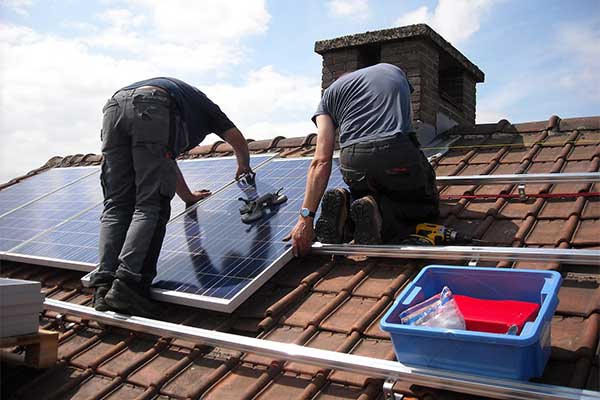

Biogas and Clean Cooking
Biodigesters that convert organic waste, including animal manure, into biogas and biofertilizer.
Read moreThe right recommendation depends on the site, available resources, energy needs and maintenance capacity.
The right recommendation depends on the site, available resources, energy needs and maintenance capacity.
Biodigesters that convert organic waste, including animal manure, into biogas and biofertilizer.
Read more
Essential energy for lighting and mobile-phone charging in areas with limited grid access.
Read more
Responsible use of digestate to support soils, crops and livelihoods.
Read moreWastewater treatment systems for homes, residential developments, institutions, farms, and commercial and industrial facilities.
Read moreSchools, community facilities, CSR programmes and development partners can combine technical assessment, funding, training and monitoring.